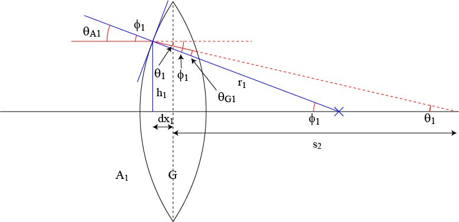
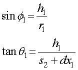
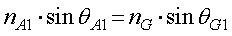
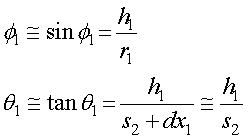
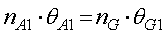
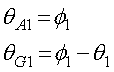
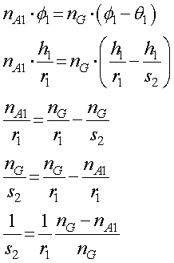

まずは以下の図のような光線を考えましょう．
そこで，まずは，平行光がレンズによって屈折していく様子を考えましょう．

これはこれで．．．結構複雑ですね．．．．
まずは，それぞれの記号の説明をしましょう．
φ１ ： 光線がレンズ左側に当たった場所の曲率半径の軸に対する角度
ｒ１ ： 曲率回転半径
ｈ１ ： そのときの高さ
ｄｘ１ ： そのときのレンズ中心からのずれ
θ１ ： 屈折した光線が軸と交わる点での角度
ｓ２ ： 屈折した光線が軸と交わる点の距離
θA1 ： 入射角
θG１ ： 屈折角
です．
幾何学的な関係は，

となります．また，屈折の関係から，

となります．ここで，ここでしめした近似を使うと，


と簡単になります．また，

これらを代入することにより，

と，ｓ２，を求めることができました．
うまく，光線が当たる高さ，ｈ１，が消えていますね．
次に，右側のガラス面での屈折を考えましょう．